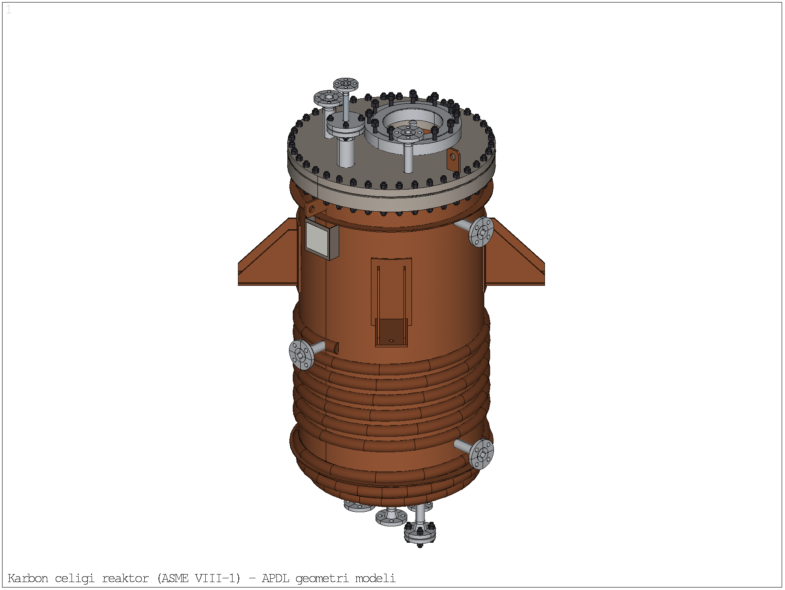

- ≈1,1 milyon dörtyüzlü/altıyüzlü eleman.
- 37 temasın hepsi yapışık; kapak contaya yapıştırılmış.
- 40 cıvata ön yükü olmayan kiriş.
- Raporda "Fixed Support" yazıyor; çözüm girdisinde mesnet yok.
- Kapak basıncı ters işaretli.
- Doğrusal elastik çözüm; TES/TI bu veriden.
Tez ve makale ile APDL analizlerinin karşılaştırması · Ekim 2026
Reaktör Üst Kafa Analizi
Tezdeki Workbench modelini inceledim, kurulum hatalarını düzelttim ve kabı MAPDL'de iki kez çözdüm: önce gerçek tasarım gibi cıvatalı ve contalı, sonra kapak gövdeye kaynaklıymış gibi birleşik. Bu sayfa üç modelin farklarını, sayılarıyla ve görselleriyle bir arada gösteriyor.
Tez / Workbench (sizin)
APDL cıvatalı model
APDL birleşik kapak
- Malzeme
- SA-516 Gr.70
- Akma σy
- 260 MPa
- İç basınç p
- 0,597 MPa
- E / ν
- 200 GPa / 0,30
- Gövde
- Di 900 × 10
- Alt kafa
- torisferik, t 12
- Düz kapak
- 39 + 6 mm
- Cıvata
- 40 × 3/4" · PCD 990

Tarayıcı 3D görünümü açamadı. Yukarıda ana çizimin APDL görünüşü var.
Sürükle: döndür · Tekerlek / iki parmak: yakınlaştır · Sağ tık: kaydır
3D model, analizdeki ölçülerle çizildi (gövde, torisferik alt kafa, flanş, düz kapak, P3 pedi, nozullar, 4 ayak). Ana çizimdeki yarım boru serpantin, izolasyon ve karıştırıcı analizde olmadığı için burada da yok. Etiketteki değerler 0,597 MPa'daki doğrusallaştırılmış gerilmelerdir.
| Büyüklük | Tez / Workbench | Cıvatalı | Birleşik |
|---|---|---|---|
| Kapakta en büyük birincil eğilme (Pm+Pb) | —doğrusallaştırma yok | 137,5 MPacıvata deliği bölgesi | 44,5 MPaP3 pedi kenarı |
| En büyük yer değiştirme | 0,407 mm | 1,03 mm | 0,31 mm |
| Göçme (limit) basıncı | —hesaplanmamış | 4,09 MPakapak göçüyor | 6,33 MPagövdedeki 270° nozulları |
| TES / TI | 280 / 278 "MPa"doğrusal veriden; birim de yanlış | 3,49 / 4,05 MPa | 5,54 / 6,30 MPa |
| En küçük emniyet katsayısı (σy'ye göre) | 3,05σ1, tek düğüm tepe değeri | 1,89doğrusallaştırılmış VM | 3,24doğrusallaştırılmış VM |
| Alt kafa zar gerilmesi | 11,19 MPayarıçap hatası | 21,5 MPa | 21,5 MPateori 20,15 |
Analiz sonucu
Sonuçları 3D'de inceleyin
İki modelin ince ağ çözümü (p = 0,597 MPa), ANSYS'teki düğüm değerleriyle: cıvatalı modelde 353 068, birleşik modelde 361 559 düğüm. Fareyle bir noktanın üzerine gelince o noktadaki değer görünür. Tıklayınca nokta sabitlenir ve aynı noktanın iki modeldeki değeri yan yana yazılır.
Renkler ANSYS'teki gibi düğüm ortalamalı değerlerdir. Tekil köşelerdeki tepe değerler (conta ve dolgu köşeleri, boru–gövde birleşimleri) tasarım için kullanılmaz; doğrusallaştırılmış değerler yukarıdaki tablolarda.
Analiz verisi yükleniyor… (her model ≈4 MB)
Modeller
Üç model
Aynı kap, aynı malzeme ve aynı basınç. Farkı birleşimlerin, mesnedin ve yükün nasıl tanımlandığı yaratıyor.
- Süpürülmüş altıyüzlü ağ: 172 277 eleman (ince), ayrıca kaba ağ.
- 4 destek ayağı; taban radyal yönde serbest.
- Basınç bütün ıslak yüzeylere normal yönde; kesik uçlara itme kuvveti.
- Conta–kapak ayrılabilir temas; 40 BEAM188 cıvata, ≈33 kN ön yük.
- ASME VIII-2 Bölüm 5 doğrusallaştırma ve elastik-tam plastik limit analizi.
- Cıvatalı modelle aynı; yalnız kapak birleşimi farklı.
- Conta yerine yapışık çelik dolgu halkası; 4 mm boşluk kapatıldı.
- Cıvata, cıvata deliği ve ön yük yok.
- 181 764 eleman (ince); 27 çözüm: normalizasyon serileri ve GCI.
- Kapağın kendi limiti için gövde elastik tutularak alt-model.
Model kurulumu
Workbench modelinde bulunanlar
Proje dosyasında (ds.dat) gördüklerim ve APDL modelinde bunun yerine yaptıklarım.
Mesnet
Sizde
Raporda alt yüzeylerde Fixed Support yazıyor, ama çözüm girdisinde hiç mesnet kısıtı yok. Destek ayakları modelden çıkarılmış.
Bende
4 destek ayağı modellendi (takviye plakası, dikmeler, taban plakası). Taban plakası cıvata deliği çevresi çevresel ve düşey yönde tutuldu, radyal yön serbest.
Etkisi
Fixed Support kabın basınçla genleşmesini engeller ve yapay eğilme gerilmesi üretir. Radyal serbest mesnet gerçeğe yakındır.
Basınç
Sizde
Kapak iç yüzüne −0,597 MPa verilmiş; kapak ≈424 kN içeri çekiliyor. Alt kafanın bir kısmına −Y yönlü basınç vektörü. Yükler kendi içinde ≈520 kN dengesiz.
Bende
0,597 MPa bütün ıslak yüzeylere yüzey normali doğrultusunda verildi. Kesik nozul uçlarına ve P3 açıklığına kapama itkisi eklendi.
Kontrol
Yalnız iç basınçta mesnet tepkilerinin toplamı 33 N; kapak itme kuvveti 402 056 N. Fark %0,008.
Temaslar ve cıvatalar
Sizde
37 temasın hepsi yapışık; kapak contaya yapışık ve ayrılamıyor. 40 cıvata ön yükü olmayan kiriş.
Bende
Kaynaklar yapışık (MPC). Conta–kapak sürtünmesiz, ayrılabilir temas. 40 cıvata BEAM188, somun yüzüne RBE3; cıvata başına ≈33 kN ön yük.
Etkisi
Kapak conta dış kenarı çevresinde dönüyor: çökme 1,03 mm (sizde 0,41). Basınç altında cıvata kuvveti 33 kN'dan 23 kN'a iniyor. Ankastre plaka teorisi ≈0,27 mm, basit mesnetli ≈1,1 mm verir.
Ağ ve çözüm
Sizde
≈1,1 milyon eleman, dengesiz dağılım: kapakta 536 654, flanşta 215 309, alt kafada 9 746. Aralık 2025 koşusu bellek yetmezliğiyle durmuş (15 GB gerekli, 14,6 GB var); Temmuz 2026 çıktısı boş.
Bende
Gövde ve kafada kalınlık boyunca 3 (ince) / 2 (kaba) eleman. İnce ağ 172 277 eleman / 353 068 düğüm, bu bilgisayarda ≈13 dk.
Etkisi
Proje dosyasında rapordaki sayıları veren tamamlanmış bir çözüm yok. İki ağ karşılaştırıldı: genel büyüklükler %1, yerel sıcak noktalar %10–15 içinde.
Yoğunluk ve conta
Sizde
Yoğunluk 7,85 t/mm³ (kabın kütlesi ≈9·10⁸ ton). Conta çelik, E = 200 GPa.
Bende
7,85·10⁻⁹ t/mm³. Conta sizinkiyle aynı tutuldu (çelik).
Etkisi
Ağırlık yükü olmadığı için yoğunluk sonucu etkilemiyordu. Gerçek conta çok daha yumuşak; bu her iki analizin de sınırlaması.
Tez ve makale
Hesap ve yöntem farkları
Model kurulumundan bağımsız olarak tez metnindeki hesaplarda gördüklerim.
Alt kafa gerilmesi
Tezde kafa, yarıçapı 450 mm olan bir yarıküre gibi hesaplanmış. Kafa torisferik; tepe eğrilik yarıçapı 810 mm.
Tez: σ = p·r/(2t) = 0,597·450/24 = 11,19 MPa
Doğrusu: σ = p·R/(2t) = 0,597·810/24 = 20,15 MPa · FE 21,5
Tezdeki değer yaklaşık yarısı. Aynı hata Δr = 0,0176 mm için de geçerli (R = 810 ile ≈0,057 mm).
Emniyet katsayısı
Tezdeki değer asal gerilmeye ve tek bir düğümdeki tepe değere dayanıyor. Tekil noktalardaki tepe değerler ağ inceldikçe büyür.
Tez: n = σy / σ1,max = 260 / 85,349 = 3,05
APDL: σy / (Pm+Pb)VM → cıvatalı 1,89 · birleşik 3,24
Akma kontrolü von Mises ile ve kalınlık boyunca doğrusallaştırılmış gerilmeyle (Pm, Pb) yapılır (ASME VIII-2 Bölüm 5).
TES ve TI
Doğrusal çözümde P–Δ eğrisi düz bir doğrudur; iki kat elastik eğim doğrusu ya da teğet kesişimi bir limit tanımlamaz. TES ve TI bir yük verir, burada basınç; gerilme değil.
Tez: TES / TI = 280 / 278 "MPa"
Elastik-tam plastik: 3,49 / 4,05 MPa (cıvatalı) · 5,54 / 6,30 MPa (birleşik)
Ağ bağımsızlığı
Tezde ve makalede ağ yakınsaması belgelenmemiş. Cıvatalı modelde iki ağ karşılaştırıldı; birleşik modelde üç ağla GCI hesaplandı.
GCI: gerilme %3,7 · çökme %3,4 · limit basıncı %0,5
Ondalık yazımlar
Tezde birkaç sayının ondalık yazımı bozuk.
| 13.432.5 MPa | → 13,4325 MPa |
| 0.051.38 mm | → 0,05138 mm |
| 0.042.98 mm | → 0,04298 mm |
| 0.017.63 mm | → 0,01763 mm |
| 0.086.06 mm/MPa | → 0,08606 mm/MPa |
| 0.407.26 mm | → 0,40726 mm |
Makaledeki basınç senaryoları
Makaledeki 5,78 MPa (akma başlangıcı, σy·t/r) ve 12,3 MPa (yırtılma) yalnız silindirik gövde için geçerli. Kap bütün olarak bunlardan önce başka bir yerden sınıra ulaşıyor.
Cıvatalı: conta ≈1,1 MPa'da açılıyor, kapak 4,09 MPa'da göçüyor
Birleşik: nozullar çevresinde 6,33 MPa'da göçme
Sayılar
Sonuç karşılaştırması
p = 0,597 MPa, ince ağ. Gerilmeler MPa, von Mises (aksi yazılmadıkça).
| Büyüklük | Tez / Makale | Cıvatalı | Birleşik |
|---|---|---|---|
| Gövde σθ (orta bölge) | 26,865teori p·r/t | 26,78 | 26,86 |
| Gövde σz | 13,43ince cidar | 13,12 | 13,30Lamé 13,285 |
| Gövde von Mises / emniyet | 23,27 / 11,18 | 23,45 / 11,09 | 23,45 / 11,09 |
| Gövde radyal genleşme | 0,05138 mm | 0,05265 mm | 0,05267 mmLamé 0,05256; 12 açı ortalaması |
| Alt kafa zar gerilmesi | 11,19 | 21,5 | 21,47teori 20,15 |
| En büyük VM (düğüm, tepe) | 68,915 | 195conta kenarı, tekil | 100,6K2 borusu köşesi, tekil; gövde 76,9 |
| En büyük σ1 (düğüm, tepe) | 85,349 | ≈136kapak | 97,3dolgu köşesi, tekil; kapak 60,4 |
| En büyük yer değiştirme | 0,40726 mm | 1,027 mm | 0,311 mm |
| Kapak orta bölgesi Pm+Pb (x = −100) | — | 97,7 | 43,6 |
| Kapakta en büyük Pm+Pb | — | 137,5cıvata deliği | 44,5ped kenarı |
| Gövde–flanş birleşimi PL / PL+Pb | — | 53,7 / 107,8 | 21,6 / 47,6 |
| Kafa knuckle PL+Pb | — | 36,6 | 36,6 |
| K2 nozulu, delik kenarından 5 mm | — | 34,4 | 34,3 |
| En yüksek doğrusallaştırılmış | — | 137,5kapak, cıvata deliği | 80,3gövde, K2 deliği kenarı |
| En küçük emniyet | 3,05σ1 tepe | 1,89 | 3,24 |
| Cıvata kuvveti | —ön yük yok | 33,1 → 23,2 kN | yok |
| Conta | yapışık | ≈1,1 MPa'da açılıyor | yok |
| Kap limit basıncı | — | 4,09 MPakapak | 6,33 MPagövde, 270° nozulları |
| TES / TI | 280 / 278 "MPa" | 3,49 / 4,05 MPa | 5,54 / 6,30 MPa |
| λ = P_L / p | — | 6,8 | 10,6 |
| Kapağın kendi limiti | — | 4,09kap limitiyle aynı | 9,13 MPagövde elastik tutularak |
ASME VIII-2 Bölüm 5 elastik kontrolü (S = 138 MPa; 1,5S = 207; 3S = 414) iki APDL modelinde de sağlanıyor. Cıvatalı modelde en büyük PL+Pb 137,5 ≤ 207; birleşikte 80,3 ≤ 207.
Görseller
Aynı görünüş, iki model
Soldaki cıvatalı, sağdaki birleşik kapak. Renk ölçekleri resimden resme değişiyor; her resmin altındaki skala çubuğunu okuyun. Büyütmek için resme tıklayın.
Göçme
Limit analizi
σy = 260 MPa elastik-tam plastik malzeme, basınç adım adım artırılarak. Limit basıncı, son yakınsayan adımdaki basınçtır.
Basınç merdiveni
Tez / makaleCıvatalıBirleşikReferans
Her değerin ne olduğu satırın üzerine gelince açılır. Tezdeki TES/TI (280/278 "MPa") bir gerilme gibi verildiği için bu basınç ekseninde yer alamıyor.
Göçen bölgenin P–Δ eğrisi
İki panelde aynı basınç ekseniTES: eğrinin, eğimi elastik eğimin yarısı olan doğruyla kesiştiği basınç (iki kat elastik eğim yöntemi). TI: elastik doğru ile eğrinin son bölümüne uydurulan doğrunun kesişimi. İkisi de bir basınçtır.
Cıvatalı model. Göçme üst kafada. 3,90 MPa'da P3 pedinin kenarı boyunca hilal biçimli bir plastik mafsal bölgesi oluşuyor, 4,09 MPa'da ped dışındaki kapağın neredeyse tamamı akıyor. Gövde ve alt kafa bu basınca kadar büyük ölçüde elastik. Conta–kapak teması ise ≈1,1 MPa'da açılıyor; bu yapısal göçme değil, sızdırmazlık sınırı.
Birleşik kapak. Kapak artık zayıf nokta değil. 5,97 MPa'da akma yalnız gövdenin 270° tarafındaki takviyesiz radyal nozulların (K1A, K1B) çevresinde; 6,33 MPa'da gövde ve alt kafa geniş ölçüde plastik. Kapak bu basınçta neredeyse elastik (en büyük plastik birim şekil değiştirme %0,6). Kapağın kendi dayanımını ölçmek için gövdeyi elastik tutunca kapak 9,13 MPa'ya kadar taşıyor.
Değerlendirme: ASME III NB-3228.3 / Ek II-1430 mantığıyla izin verilen basınç ≤ 2/3·P_TES → cıvatalıda 2,33 MPa, birleşikte 3,69 MPa. İkisi de 0,597 MPa'nın üstünde.
Birleşik kapak
Normalizasyon
Kapak sonuçlarını boyutsuz hale getirip açıklık oranı ve kalınlık oranıyla nasıl değiştiklerine baktım (üst alt-model, 27 çözüm).
ΠL ≈ 3,28Kapalı kapakta boyutsuz limit basıncı, kalınlıktan bağımsız (±%2). von Mises ankastre plaka ≈3,1–3,25.
C ≈ 0,176Elastik eşdeğer kapak katsayısı (β/4). ASME UG-34'te kaynaklı düz kafa için C = 0,17.
1 − 0,5·d/DPedsiz P3 açıklığının limit basıncına etkisi. Mevcut ped kaybı fazlasıyla karşılıyor (1,13).
GCI ≤ %3,7Üç ağla yakınsama: gerilme %3,7, çökme %3,4, limit %0,5.
σ_ref = p·a²/t²a = 463 mm (basınçlı alan yarıçapı), t = 45 mm (39 plaka + 6 çıkıntı)
β = σ_b / σ_refσ_b: kapakta en büyük Pm+Pb (von Mises). C_eff = β/4
Π_L = P_L·a²/(σy·t²)Boyutsuz limit basıncı. Basit mesnet 1,5 (Tresca) / 1,63 (VM), ankastre 2,815 / ≈3,1–3,25
w* = W·E·t³/(p·a⁴)Boyutsuz çökme. Ankastre 0,171, basit mesnet 0,696
K = σ / (p·r/t)Gövde zar gerilmesine (26,865 MPa) göre yığılma katsayısı
λ = P_L / pLimit yük çarpanı: cıvatalı 6,8 · birleşik 10,6 · kapak 15,3
| d [mm] | d/D | σ_b / σ_b0 | W / W0 | P_L [MPa] | P_L / P_L0 | TES | TI |
|---|---|---|---|---|---|---|---|
| 0 | 0,000 | 1,000 | 1,000 | 8,114 | 1,000 | 7,581 | 8,012 |
| 100 | 0,108 | 1,811 | 1,054 | 7,835 | 0,966 | 7,332 | 7,610 |
| 200 | 0,216 | 1,916 | 1,269 | 7,308 | 0,901 | 6,770 | 7,228 |
| 300 | 0,324 | 1,952 | 1,462 | 6,820 | 0,840 | 6,334 | 6,712 |
| 400 | 0,432 | 1,921 | 1,591 | 6,449 | 0,795 | 5,960 | 6,396 |
| 300 pedli | 0,324 | 1,071 | 0,703 | 9,134 | 1,126 | 8,397 | 9,086 |
| t [mm] | t/D | β | w* | P_L [MPa] | Π_L | P_L / P_sil | kenar tutulması f |
|---|---|---|---|---|---|---|---|
| 35 | 0,0378 | 0,626 | 0,237 | 4,885 | 3,288 | 0,740 | 0,82 – 0,87 |
| 40 | 0,0432 | 0,651 | 0,252 | 6,370 | 3,283 | 0,965 | 0,78 – 0,84 |
| 45 | 0,0486 | 0,672 | 0,269 | 8,114 | 3,304 | 1,230 | 0,76 – 0,81 |
| 50 | 0,0540 | 0,693 | 0,286 | 9,980 | 3,291 | 1,512 | 0,73 – 0,78 |
| 55 | 0,0594 | 0,716 | 0,302 | 11,840 | 3,227 | 1,794 | 0,70 – 0,75 |
Kenar tutulması f: 0 basit mesnet, 1 ankastre; ilk değer gerilmeden, ikincisi çökmeden. Elastikte kenar kısmen tutulu, göçmede ise tam ankastre gibi davranıyor (Π_L ≈ von Mises ankastre değeri). Kapalı birleşik kapakta t ≈ 40,7 mm'nin üstünde kapak, kabın limitini belirlemiyor; P_sil = 6,60 MPa silindir limitidir.
Makale
Depolanmış enerji ve güvenlik çemberi
Makalenin formülüyle (izentropik ideal gaz, V = 1,1 m³, k = 1,4). Formül makaledeki 0,814 MJ ve 25,47 MJ değerlerini aynen veriyor.
0,5 psi aşırı basınç yarıçapı
Ölçekli çizim; merkez reaktör| Senaryo | p [MPa] | E [MJ] | TNT [kg] | R [m] |
|---|---|---|---|---|
| Çalışma basıncı | 0,597 | 0,81 | 0,195 | 14,5 |
| Cıvatalı: conta açılması | 1,100 | 1,67 | 0,400 | 18,5 |
| Cıvatalı: TES (kapak) | 3,490 | 6,31 | 1,509 | 28,8 |
| Cıvatalı: limit (kapak) | 4,086 | 7,54 | 1,802 | 30,5 |
| Birleşik: TES (K1A) | 5,538 | 10,59 | 2,531 | 34,2 |
| Makale: akma başlangıcı | 5,778 | 11,10 | 2,653 | 34,7 |
| Birleşik: kap limiti | 6,330 | 12,28 | 2,936 | 35,9 |
| Cıvatalı: kaba yırtılma tahmini | 7,622 | 15,08 | 3,605 | 38,5 |
| Birleşik: kaba yırtılma tahmini | 11,809 | 24,36 | 5,823 | 45,1 |
| Makale: yırtılma (silindir) | 12,300 | 25,47 | 6,087 | 45,8 |
R, makaledeki 12,3 MPa / 45,8 m referansından kübik kök ölçeklemesiyle (R ~ W^(1/3)) hesaplandı. Limit basıncı (σy ile) göçmenin başladığı basınçtır, yırtılma değildir. Kaba yırtılma tahmini P_L·σu/σy ile (σu = 485 MPa); makaledeki 12,3 MPa da silindir için aynı mantıkla, σu ile hesaplanmış.
Yorum
Dikkat edilmesi gereken noktalar
Analizler sırasında takıldığım ve tezde açıkça yazılması gereken konular.
- Kapak sökülebilir olmalı
Reaktör kapağı karıştırıcı, iç donanım ve muayene için açılır. Birleşik model gerçek tasarımı değil, kusursuz bir birleşimin sınır durumunu gösterir. Kapak cıvatalı kalacaksa tasarımı belirleyen cıvatalı modeldir.
- Sızdırmazlık
Contasız modelde kaçak yolu yok. Cıvatalı modelde conta ≈1,1 MPa'da açılıyordu; gerçek tasarım için bu sınır geçerli.
- Zayıf nokta nozullara kaydı
Birleşik kapakta kap, gövdedeki takviyesiz radyal nozullar (K1A, K1B) çevresinde göçüyor; elastikte en yüksek gerilme K2 deliğinin kenarında. Kapak ne kadar güçlendirilirse güçlendirilsin kap limiti ≈6,3–6,6 MPa'yı geçemez.
- Gövde elastik tutuldu
Her yer plastikken alt-model durumlarının hepsi ≈6,14 MPa'da K1B nozulundan göçtü; açıklık ve kalınlığın etkisi görünmedi. A ve B serilerindeki P_L değerleri kapak takımının kendi limitidir.
- P3 kapama itkisi
Cıvata kuvvetleri tamamen kaldırıldı. P3 açıklığını kapatan kör flanşın basınç itkisi (42,2 kN) ped üstünde duruyor; bu cıvata kuvveti değil, akışkan basıncının yükü. Verilmezse kuvvet dengesi bozulur.
- Conta yuvası
Contanın yerine aynı ölçüde çelik dolgu halkası kondu. Dış tarafta 1,5 × 3 mm'lik kapalı bir cep kaldı. Dolgu köşelerindeki tepe değerler (VM 75,8, σ1 97,3 MPa) tekil; tasarımda kullanılmaz.
- Flanş 4 mm yükseltildi
Kapak altı ile flanş üstü arasındaki boşluğu kapatmak için flanş dış halkası z = 69,5'ten 73,5'e uzatıldı. Ana çizime dokunulmadı.
- a ve t seçimi
Normalize sonuçlar a = 463 mm ve t = 45 mm ile hesaplandı. Cıvatalı model için doğal seçim a ≈ 470 mm. a'daki %1,5'lik fark Π_L'yi %3 değiştirir; t = 39 alınırsa Π_L 1,33 kat büyük çıkar.
- P3 pedi ağır olabilir
Pedli kapak, deliksiz kapaktan bile %13 daha yüksek limitli ve daha az çöküyor. UG-37/39 alan yöntemiyle daha hafif bir ped yeterli olabilir.
- Workbench sonucuyla benzerlik
Workbench modeli her şeyi yapıştırdığı için aslında birleşik bir modeldir: 68,9 MPa ve 0,41 mm. Birleşik APDL modeli 76,9 MPa ve 0,31 mm veriyor. Bu yakınlık kısmen tesadüf; Workbench modelinde basınç ters, yükler dengesiz ve mesnet yoktu.
- Küçük yer değiştirme
Limit analizleri büyük şekil değiştirme etkisi olmadan (NLGEOM kapalı) ve kaba ağla yapıldı. Düz kapakta zar etkisi ihmal edildiği için sonuç güvenli taraftadır.
Kabuller
Sınırlamalar
İki analizde de geçerli olan basitleştirmeler.
İki analiz için de geçerli: conta çelik kabul edildi; kaynaklar yapışık temasla idealize edildi; korozyon payı (3 mm), tasarım sıcaklığı (190 °C), yarım boru serpantin, karıştırıcı, ağırlık ve nozul dış yükleri dahil değil. Cıvata ön yükü (≈33 kN) bir varsayım. Bu çalışma bir ön değerlendirmedir; resmî uygunluk için onaylı hesap raporu gerekir.
Hazırlayan: Muhammet Hanifi Dikici · Ekim 2026 · Görseller ANSYS MAPDL çıktılarıdır.